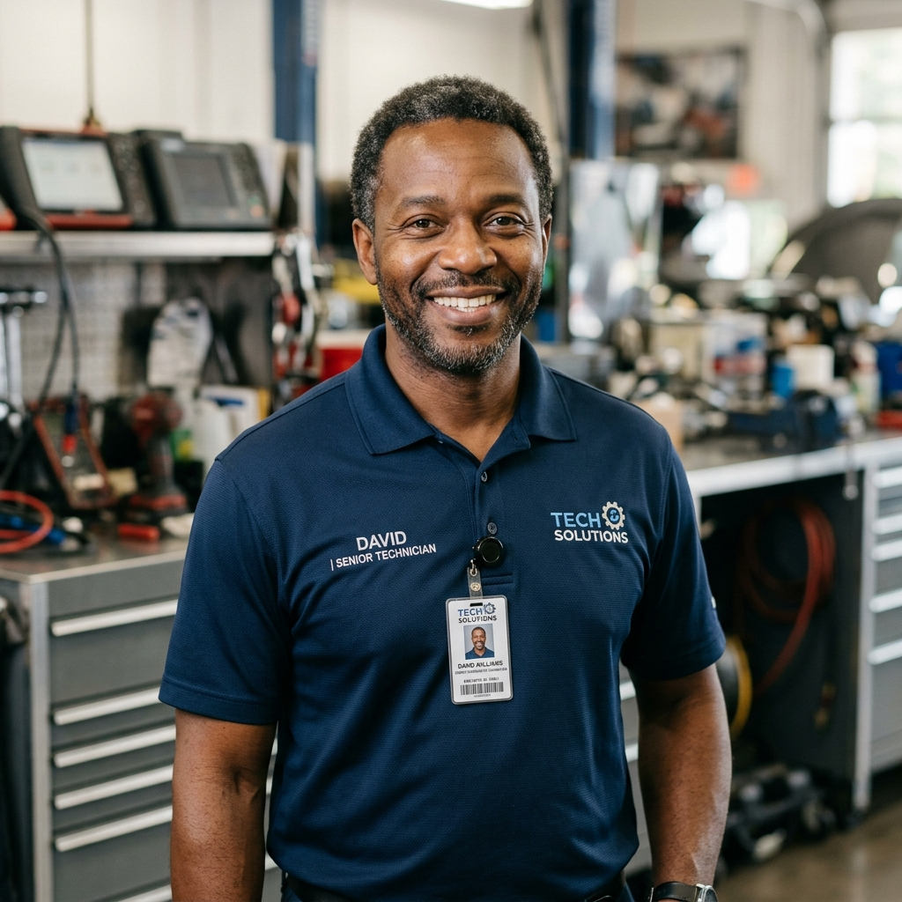

We Bring the Workshop to You
AutoDiag was founded to eliminate the hassle of shop visits. We deliver professional OBD2 diagnostic services right to your doorstep — fast, transparent, and certified.
Transparent Diagnostics for Everyone
We believe every driver deserves honest, affordable, and accessible vehicle diagnostics without the pressure of a repair shop.
Honesty First
We provide unbiased diagnostic reports with no pressure to buy repairs. Our reports explain codes in English.
At Your Doorstep
Home, office, or roadside — our mobile units arrive fully equipped. No towing, no waiting in shop lines.
Certified Experts
Every mechanic is ASE-certified with years of experience across all vehicle makes and models.
The People Behind AutoDiag
A passionate team of automotive experts and technologists building the future of mobile diagnostics.
"After 15 years in the auto industry, I saw how much drivers overpaid for basic diagnostics. AutoDiag changes that."
"We've built a dispatch system that gets a certified mechanic to your door in under 30 minutes — anywhere in the city."

"With our professional OBD2 equipment, we deliver dealership-quality diagnostics at a fraction of the cost."
Our Mobile Tech Hubs & Fleet Specs
Every AutoDiag dispatch vehicle is a state-of-the-art diagnostic workshop on wheels, equipped to diagnose any vehicle system on-site.
Journey & Milestones
Founded in Chicago
Launched with 2 mobile units servicing the downtown area with basic OBD2 scans.
Custom Dispatch Integration
Developed proprietary routing software reducing average mechanic arrival times to under 30 minutes.
50+ Covered Cities
Expanded nationwide with over 120 ASE-certified mobile mechanics and custom-fitted fleet vans.
Mobile Unit Specifications
Our dispatch vans carry specialized equipment that meets dealership diagnostic standards.
-
Professional OBD2/CAN Scanners
Autel & Snap-on diagnostic tablets supporting bi-directional controls, reprogramming, and active sensor testing.
-
Advanced Smoke Leak Detectors
High-accuracy smoke machines to immediately pin-point vacuum, intake, and EVAP leaks.
-
Electrical Telemetry Kits
Digital multi-meters, battery load testers, and digital oscilloscopes to trace complex wiring issues.
Our Certified Service Standards
We hold ourselves to the highest benchmarks in the automotive industry to ensure your peace of mind.
ASE Certified Excellence
Every field diagnostic technician at AutoDiag is ASE (Automotive Service Excellence) Certified, undergoing rigorous regular training and background checks.
Eco-Friendly Diagnostics
Our fleet operates with optimized routing to minimize emission footprints. Our pre-emissions tests help drivers repair failing exhaust components early, protecting our air.
Secure & Encrypted Data
We respect your privacy. All telemetry, OBD2 scan logs, and registered vehicle details are encrypted and stored securely on our AWS cloud infrastructure.
Frequently Asked Questions
Everything you need to know about our team, standards, and mobile operations.